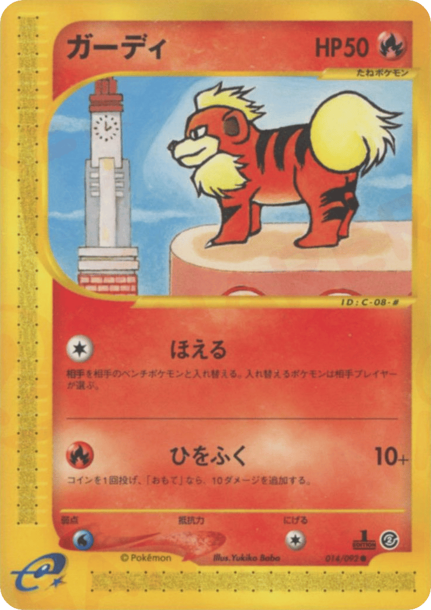
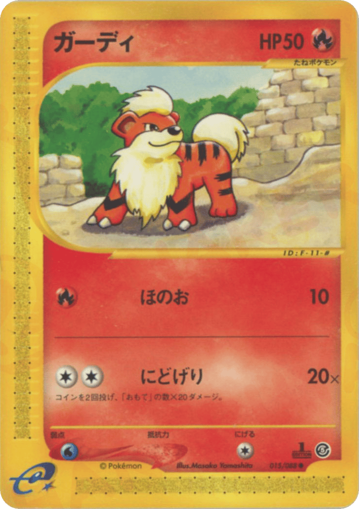
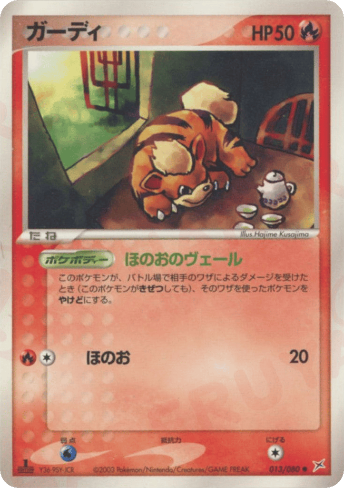
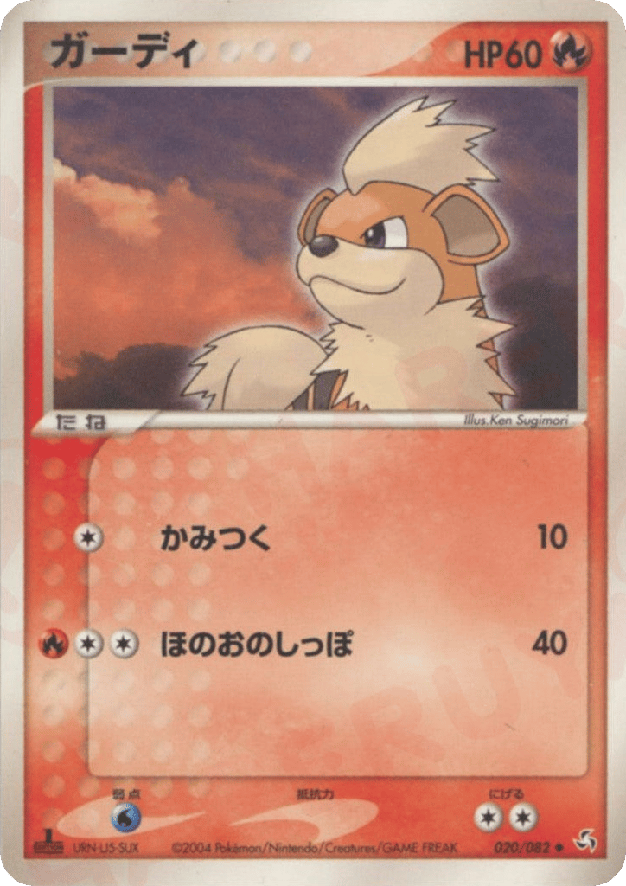
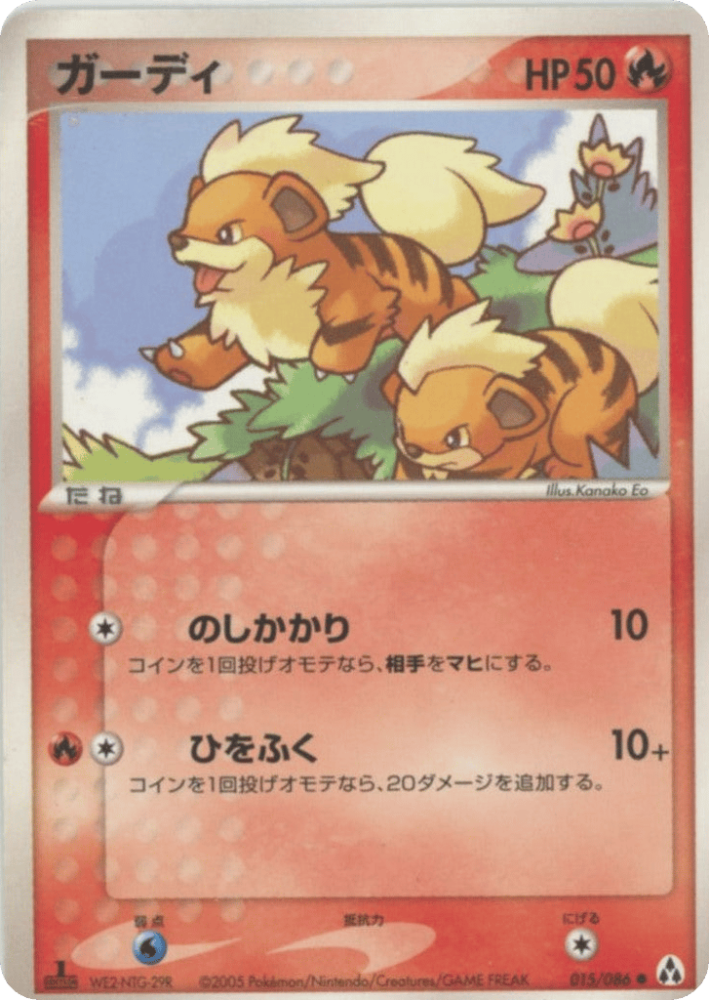
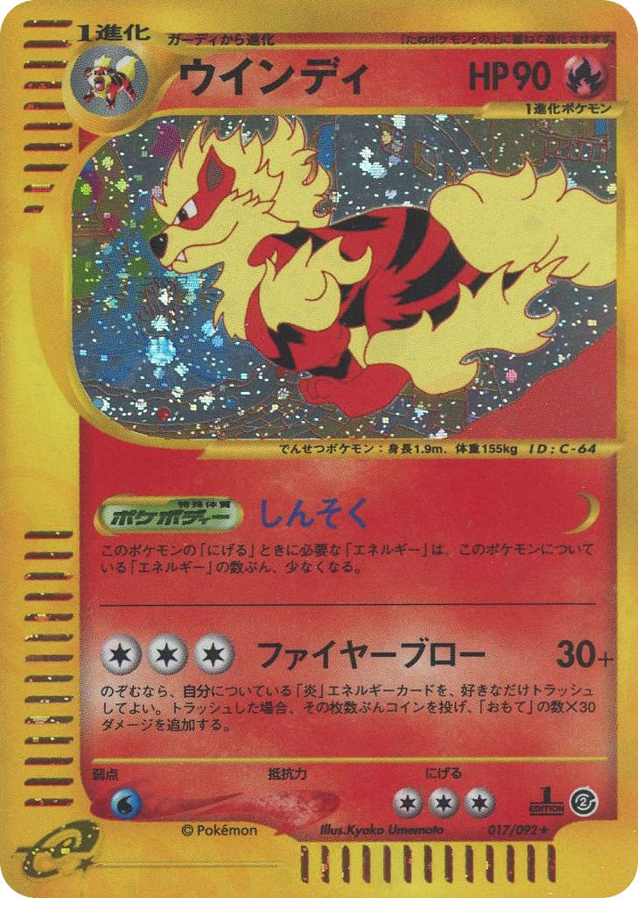
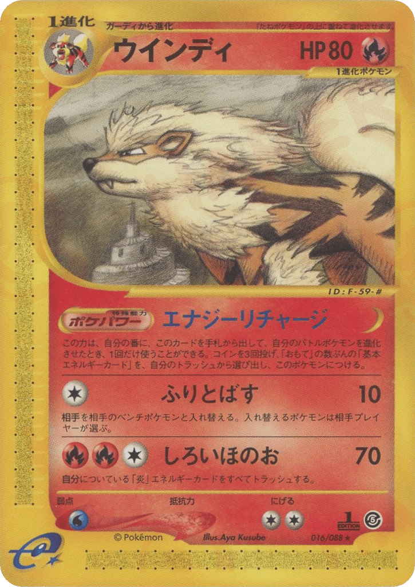
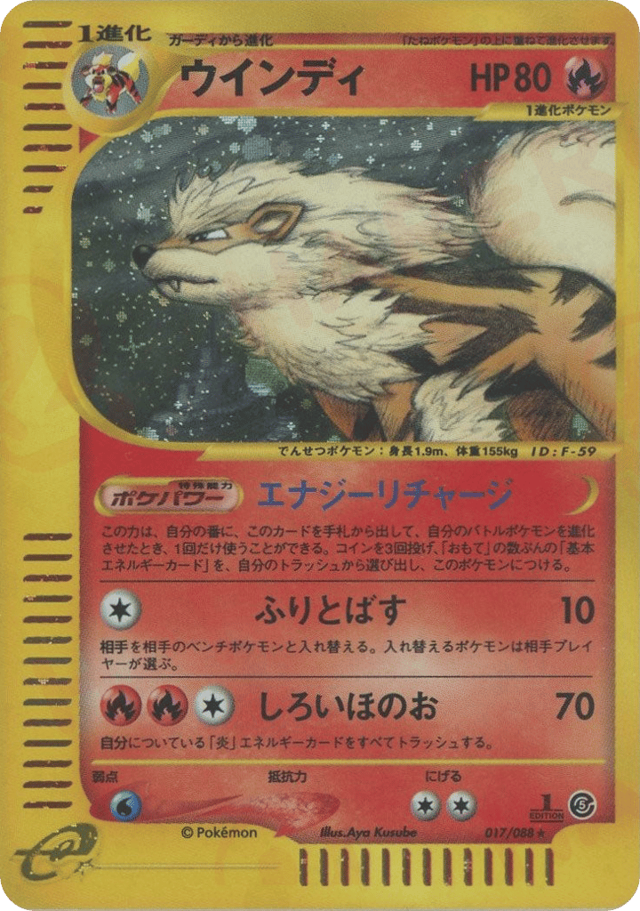
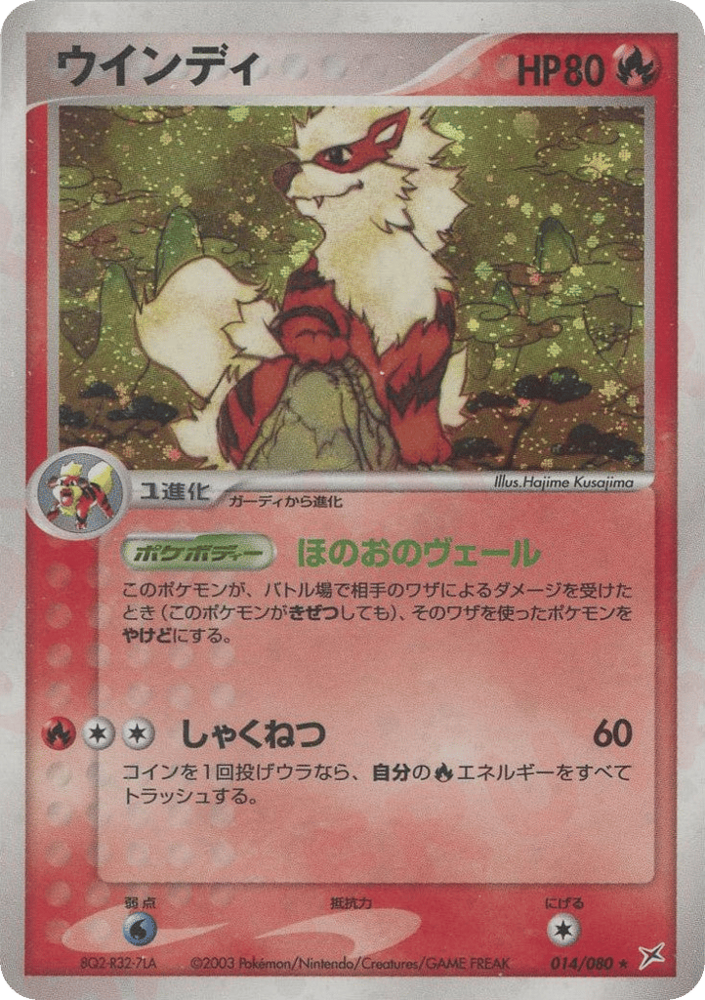
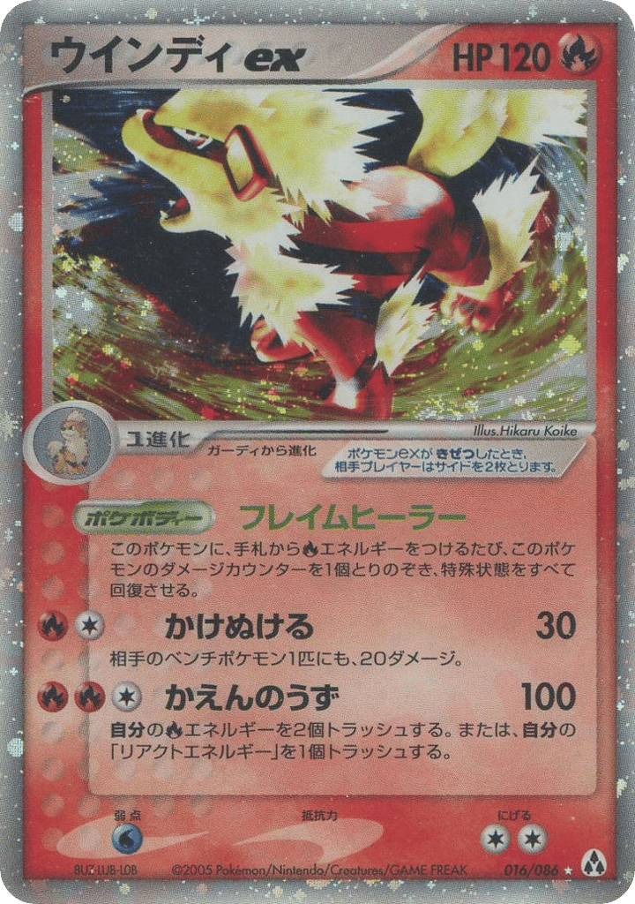

ガーディ 014/092
The Town on No Map

有 1st Edition · 右下卡號上方
圖上未見閃面；不能僅憑此排除特殊加工
下一步：查無初版標記版圖證
原來源ecard2_ja-14
ガーディ 015/092
The Town on No Map

有 1st Edition · 右下卡號上方
圖上未見閃面
下一步：查無初版標記版圖證；本輪補圖仍為初版，不新增
原來源ecard2_ja-15
ガーディ 015/088
Mysterious Mountains

有 1st Edition · 右下卡號上方
圖上未見閃面
下一步：查無初版標記版圖證
原來源ecard5_ja-15
ガーディ 013/080
Magma VS Aqua: Two Ambitions

有 1st Edition · 左下
圖上未見閃面
下一步：查無初版標記版圖證
原來源adv4_ja-13
ガーディ 020/082
Flight of Legends

有 1st Edition · 左下
圖上未見閃面
下一步：查無初版標記版圖證
原來源pcg1_ja-20
ガーディ 015/086
Mirage Forest

有 1st Edition · 左下
圖上未見閃面
下一步：查無初版標記版圖證
原來源pcg5_ja-15
ウインディ 016/092
The Town on No Map

有 1st Edition · 右下卡號上方
一般面；來源目錄列 ★，017/092 另列 ★(キラ)
下一步：查無初版標記版；不和 017/092 合併
原來源 · 加工目錄ecard2_ja-16
ウインディ 017/092
The Town on No Map

有 1st Edition · 右下卡號上方
插畫區可見閃紋；來源目錄列 ★(キラ)
下一步：查無初版標記版；與 016/092 的背景／版面不同
原來源 · 加工目錄ecard2_ja-17
ウインディ 016/088
Mysterious Mountains

有 1st Edition · 右下卡號上方
一般面；來源目錄列 ★，017/088 另列 ★(キラ)
下一步：查無初版標記版；同插畫 017/088 分列
原來源 · 加工目錄ecard5_ja-16
ウインディ 017/088
Mysterious Mountains

有 1st Edition · 右下卡號上方
插畫區可見閃紋；來源目錄列 ★(キラ)
下一步：查無初版標記版；同插畫 016/088 分列
原來源 · 加工目錄ecard5_ja-17
ウインディ 014/080
Magma VS Aqua: Two Ambitions

無初版標記 · 左下沒有初版標記
插畫区可見閃紋
下一步：本輪已有初版原圖並排核對，待匯入；再查加工細項
原來源adv4_ja-14
ウインディ 021/082
Flight of Legends

有 1st Edition · 左下
圖上未見清楚閃紋，加工待查，不因 ★ 直接判定閃面
下一步：查無初版標記版及加工圖證
原來源pcg1_ja-21
ウインディex 016/086
Mirage Forest

無初版標記 · 左下沒有初版標記
卡框及插畫区可見閃紋
下一步：本輪已有初版原圖並排核對，待匯入；十字／渦卷等紋路暫不另拆版本
原來源pcg5_ja-16
將 13 張既有卡的版本標記與兩張新增初版圖證匯入正式建置流程，再重審 early-integration-review 雜湊；本輪主入口仍 239 筆，不直接改歷史資料或僅把圖片替換成不同版本。